Manual Pengguna
Aplikasi Juri Pertandingan Mewarna, Festival Seni Bina Johor 2026. Kemas kini: 31 Oktober 2026.
Pengenalan
Aplikasi ini membolehkan juri menilai karya mewarna dengan telefon: imbas kod QR pada karya, ketuk markah, simpan. Urusetia memantau penilaian dan mengumumkan pemenang dari halaman admin. Semua data disimpan dalam Google Sheet penganjur.
Nombor bulat merah dalam setiap gambar sepadan dengan nombor langkah di bawah gambar itu.
| Peranan | Halaman | Cara masuk |
|---|---|---|
| Juri | Laman juri | Pautan peribadi yang dihantar melalui WhatsApp. Tiada kata laluan. |
| Urusetia / admin | /admin/ | Kunci admin (diberi oleh penyelaras, jangan dikongsi) |
| Meja pendaftaran | /admin/?mode=desk | Kunci admin, mod kaunter (butang besar) |
| Orang ramai | Halaman depan dan /results/ | Terbuka |
Keperluan: telefon pintar dengan Chrome (Android) atau Safari (iPhone), kamera berfungsi, dan internet. Kalau internet terputus seketika, markah tetap disimpan di telefon dan dihantar sendiri apabila talian pulih.
Penilaian buta: juri hanya nampak ID karya (cth. A-007), kategori dan umur. Nama peserta tidak dipaparkan kepada juri.
Kategori: A untuk 7 hingga 12 tahun, B untuk bawah 7 tahun.
Gambar dalam manual ini diambil daripada data contoh; nama juri dan peserta adalah rekaan.
Bahagian A: Panduan juri
Setiap karya mengambil kira-kira 30 saat: imbas, ketuk lima markah, simpan.
A1. Buka pautan juri
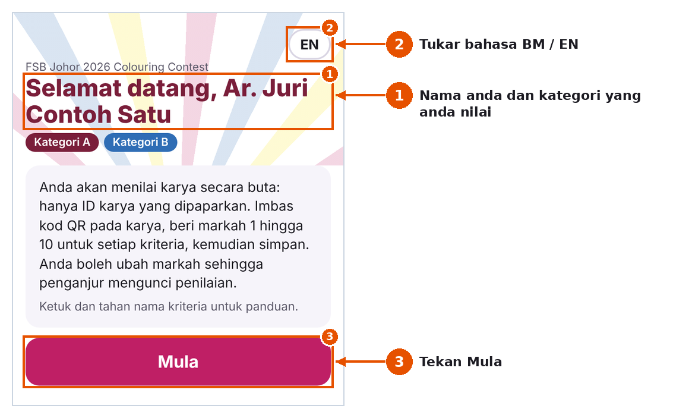
- Buka mesej WhatsApp daripada urusetia dan ketuk pautan peribadi anda. Semak nama anda dan kategori yang anda nilai.
- Ketuk EN jika mahu paparan dalam Bahasa Inggeris.
- Baca arahan ringkas, kemudian ketuk Mula. Skrin ini hanya muncul kali pertama.
Jangan kongsi pautan ini. Pautan disimpan dalam telefon, jadi anda tidak perlu membukanya semula dari WhatsApp.
A2. Laman utama juri
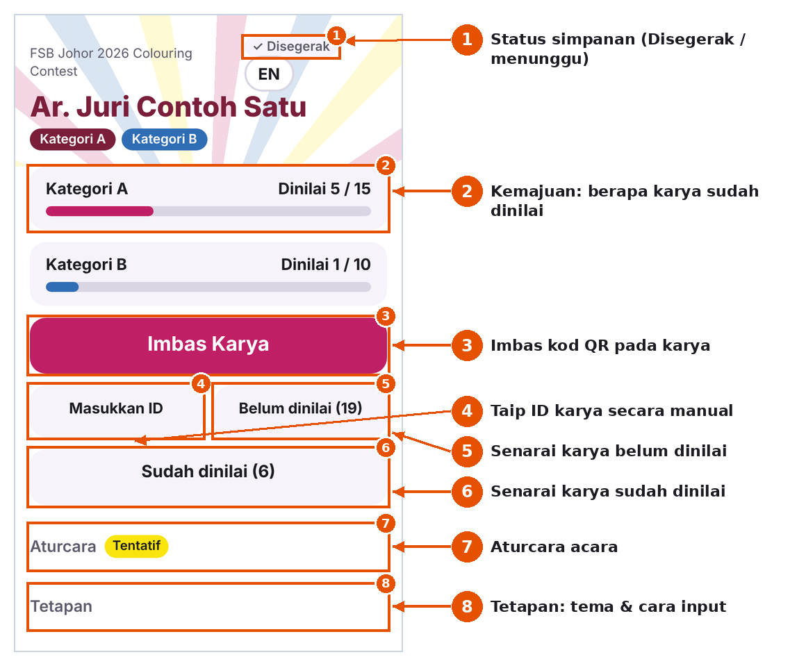
- Status simpanan. "✓ Disegerak" bermaksud semua markah sudah sampai ke urusetia.
- Kemajuan setiap kategori, contohnya "Dinilai 5 / 15".
- Imbas Karya: cara utama untuk mula menilai (A3).
- Masukkan ID: taip ID jika kod QR rosak atau kabur (A4).
- Belum dinilai: senarai ID yang belum anda nilai, supaya tiada karya tertinggal.
- Sudah dinilai: senarai karya yang sudah dinilai, dengan markah (A8).
- Aturcara: jadual acara hari itu.
- Tetapan: tema terang atau gelap, dan cara input (butang atau gelongsor).
A3. Imbas kod QR
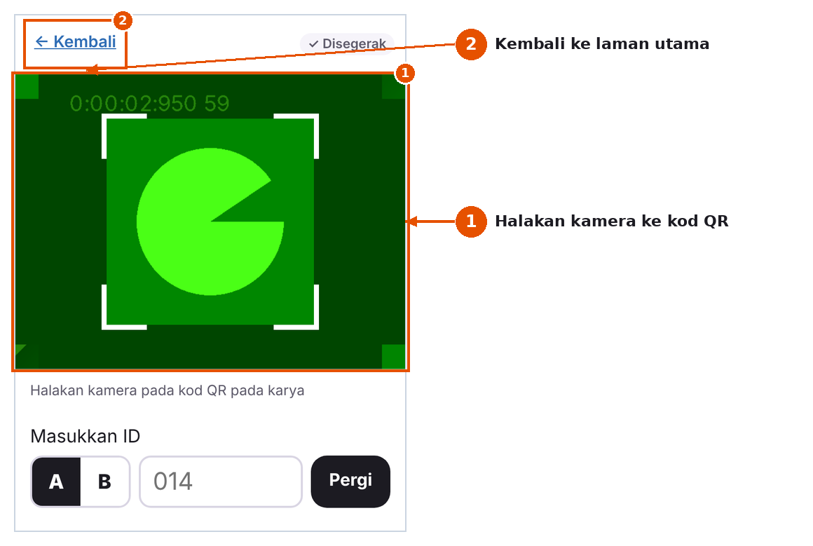
- Benarkan akses kamera apabila diminta. Halakan kamera ke kod QR pada karya, dari jarak kira-kira 30 hingga 40 cm. Skrin pemarkahan akan terbuka sendiri.
- Ketuk ← Kembali untuk ke laman utama.
A4. Masukkan ID secara manual
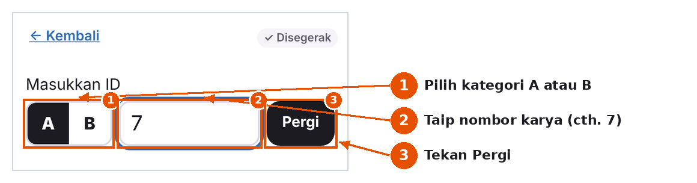
- Pilih kategori A atau B.
- Taip nombor karya sahaja. Contoh: untuk A-007, taip
7. - Ketuk Pergi.
A5. Skrin pemarkahan
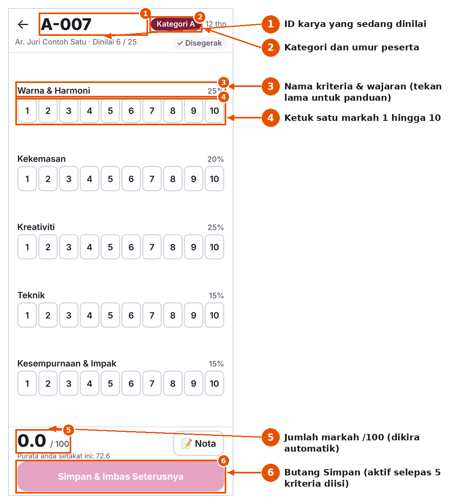
- ID karya. Pastikan ID ini sama dengan label pada karya di hadapan anda.
- Kategori dan umur peserta.
- Nama kriteria dan wajaran. Tekan dan tahan nama kriteria untuk melihat panduan penilaian (A6).
- Ketuk satu nombor 1 hingga 10 untuk setiap kriteria (1 = baru bermula, 10 = cemerlang).
- Jumlah /100 dikira automatik mengikut wajaran.
- Butang Simpan hanya aktif selepas kelima-lima kriteria diberi markah.
| Kriteria | Kategori A | Kategori B |
|---|---|---|
| Warna & Harmoni | 25% | 25% |
| Kekemasan | 20% | 15% |
| Kreativiti | 25% | 30% |
| Teknik | 15% | 10% |
| Kesempurnaan & Impak | 15% | 20% |
A6. Panduan kriteria
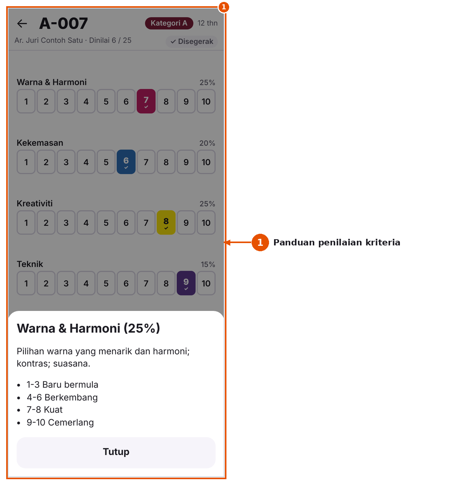
- Panduan menerangkan apa yang dinilai dan maksud julat markah: 1 hingga 3 baru bermula, 4 hingga 6 berkembang, 7 hingga 8 kukuh, 9 hingga 10 cemerlang. Ketuk Tutup untuk kembali.
A7. Isi markah dan simpan
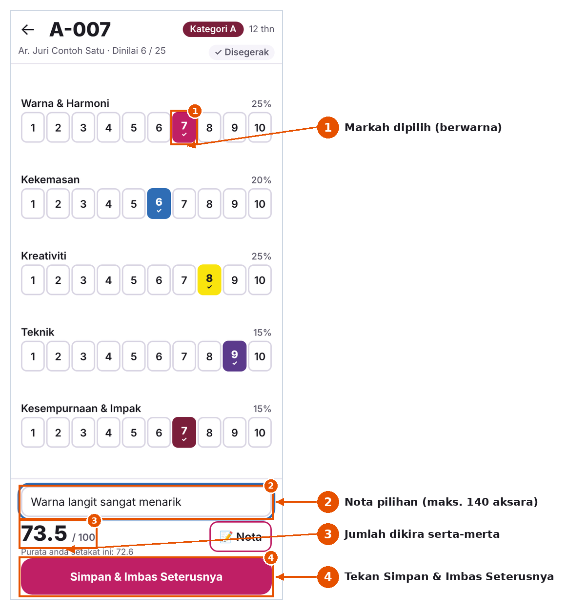
- Markah yang dipilih menjadi berwarna. Ketuk nombor lain untuk menukar.
- Ketuk Nota jika mahu menulis catatan ringkas (pilihan, maksimum 140 aksara).
- Semak jumlah markah.
- Ketuk Simpan & Imbas Seterusnya.
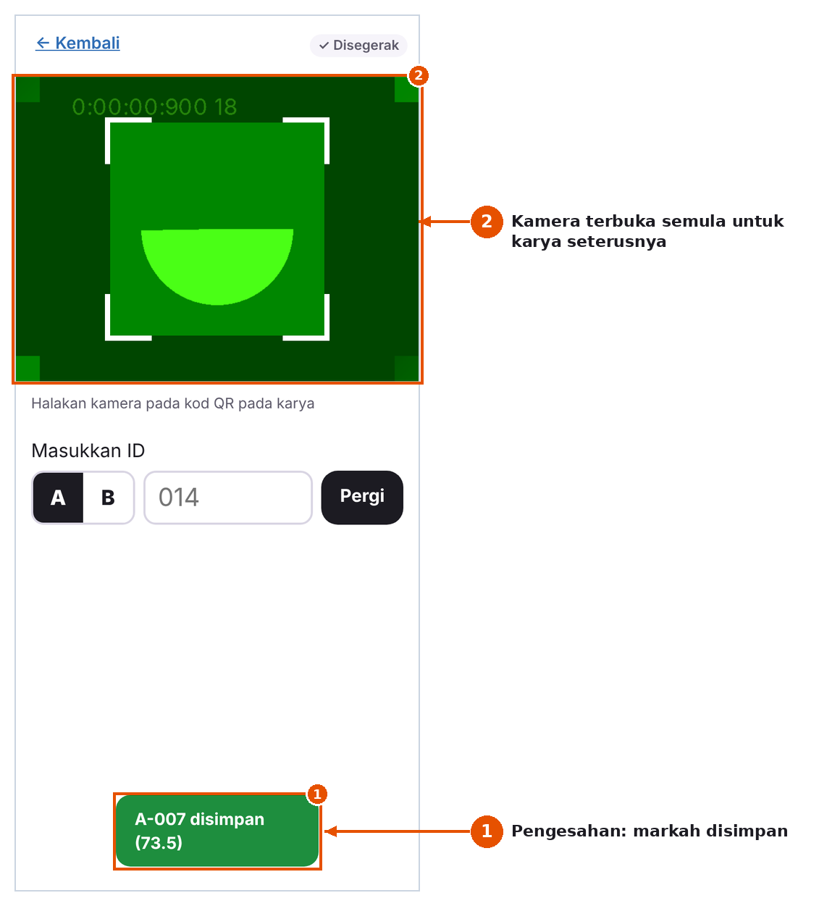
- Mesej hijau mengesahkan markah disimpan, contohnya "A-007 disimpan (73.5)".
- Kamera terbuka semula. Imbas karya seterusnya.
A8. Semak atau ubah markah
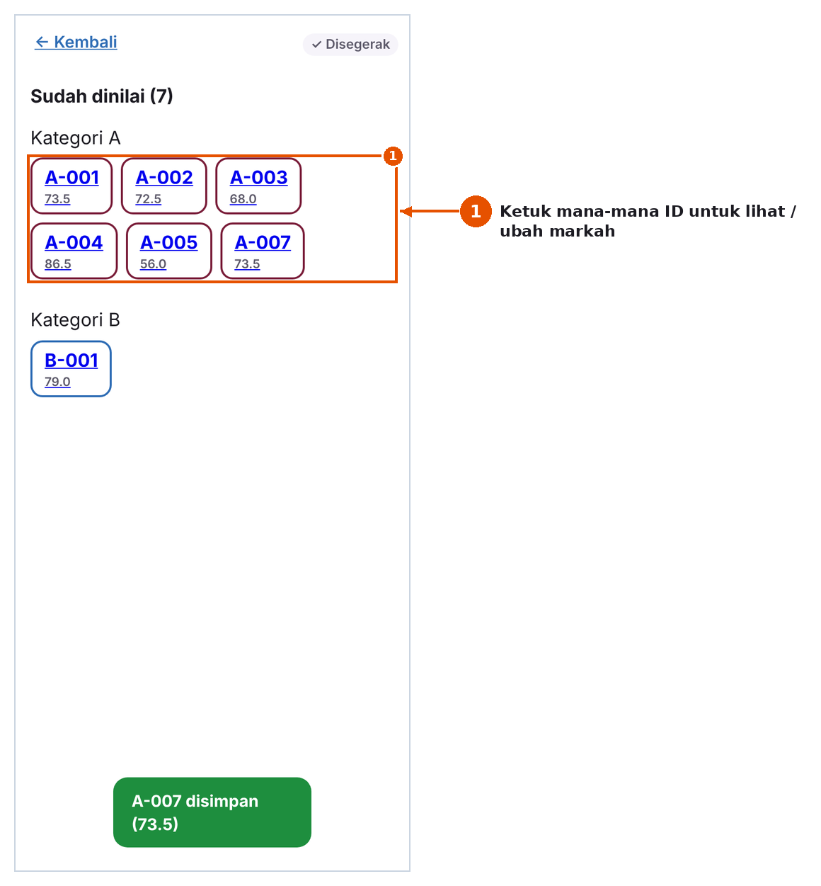
- Dari laman utama, ketuk Sudah dinilai. Ketuk mana-mana ID untuk membuka markahnya.
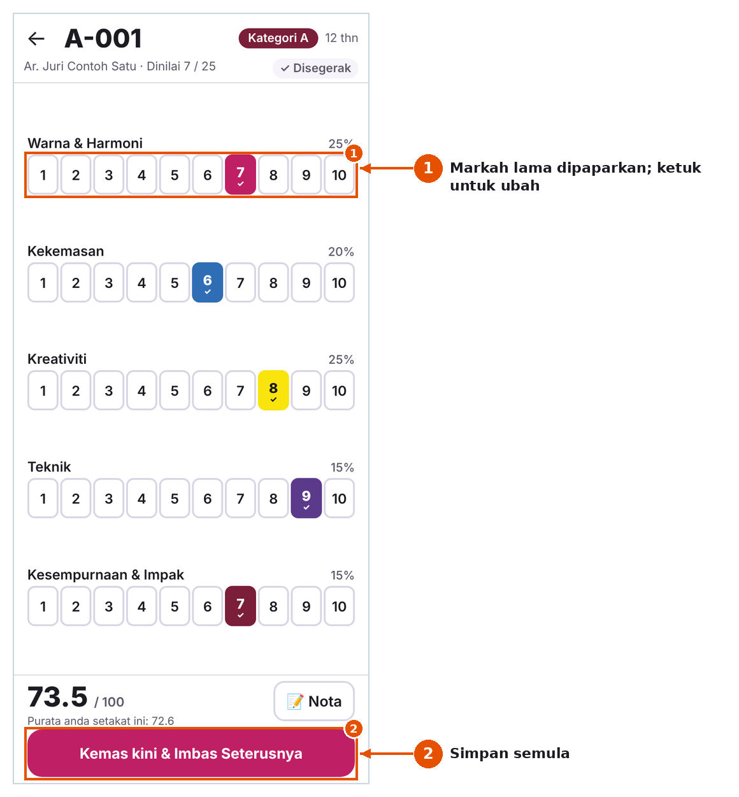
- Markah lama dipaparkan. Ketuk nombor baharu pada kriteria yang mahu diubah.
- Ketuk Kemas kini & Imbas Seterusnya untuk menyimpan.
Markah boleh diubah sehingga urusetia mengunci penilaian. Selepas dikunci, skrin hanya boleh dibaca.
A9. Jika internet terputus
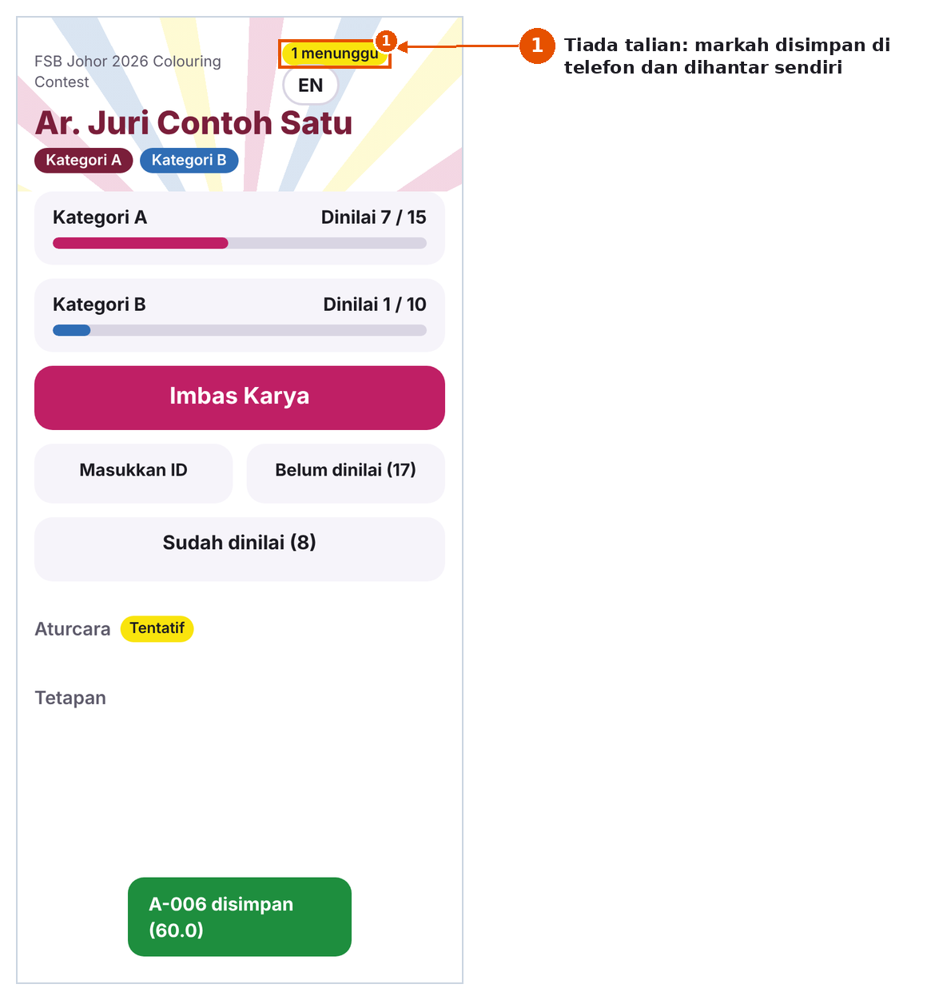
- Lencana bertukar kepada "1 menunggu" (atau lebih). Teruskan menilai seperti biasa. Markah disimpan dalam telefon dan dihantar sendiri apabila talian pulih, lalu lencana kembali menjadi "✓ Disegerak".
Jangan tutup pelayar atau padam data pelayar selagi ada markah yang menunggu.
Bahagian B: Panduan urusetia (admin)
Gunakan komputer riba atau tablet untuk halaman admin. Kunci admin memberi kuasa penuh: menukar markah, memadam juri, mengunci dan menerbitkan keputusan. Simpan kunci ini secara peribadi.
B1. Masuk ke halaman admin
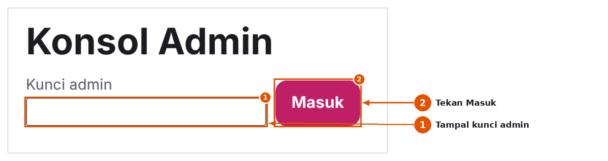
- Buka
/admin/dan tampal kunci admin. - Ketuk Masuk. Kunci disimpan dalam pelayar itu, jadi kali seterusnya anda terus masuk.
B2. Gambaran (pemantauan)
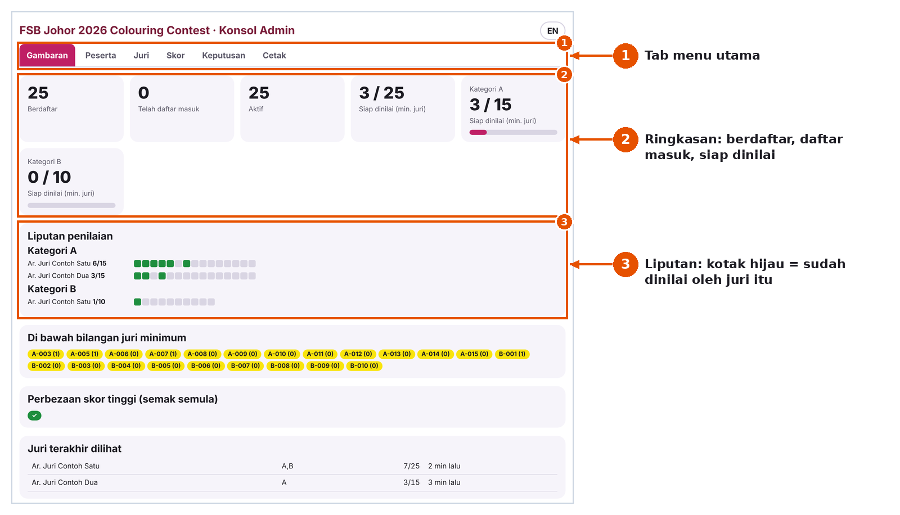
- Tab menu: Gambaran, Peserta, Juri, Skor, Keputusan, Cetak.
- Ringkasan: jumlah berdaftar, sudah daftar masuk, aktif, dan karya yang sudah cukup bilangan juri.
- Liputan penilaian: satu baris bagi setiap juri. Kotak hijau bermaksud karya itu sudah dinilai oleh juri tersebut. Di bawahnya ada senarai karya yang belum cukup juri, amaran perbezaan markah yang besar, dan bila juri terakhir aktif. Halaman ini dikemas kini sendiri setiap 15 saat.
B3. Daftar juri dan hantar pautan WhatsApp
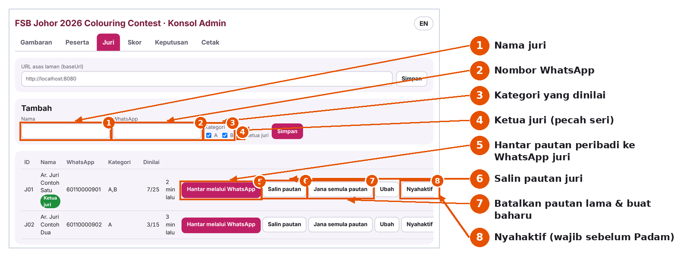
- Taip nama juri.
- Taip nombor WhatsApp. Format
012-345 6789diterima; sistem menukarnya kepada60123456789. - Tandakan kategori yang dinilai (A, B atau kedua-duanya).
- Tandakan Ketua juri jika juri ini akan memutuskan keputusan seri. Kemudian ketuk Simpan.
- Ketuk Hantar melalui WhatsApp. WhatsApp terbuka dengan mesej dan pautan peribadi juri; tekan hantar.
- Salin pautan jika mahu menghantar melalui saluran lain.
- Jana semula pautan membatalkan pautan lama serta-merta (contohnya telefon hilang atau tersalah hantar), kemudian hantar pautan baharu.
- Nyahaktif menghalang juri daripada menilai. Butang Padam hanya berfungsi selepas juri dinyahaktif. Markah juri yang dipadam tidak dikira dalam keputusan.
B4. Peserta dan daftar masuk
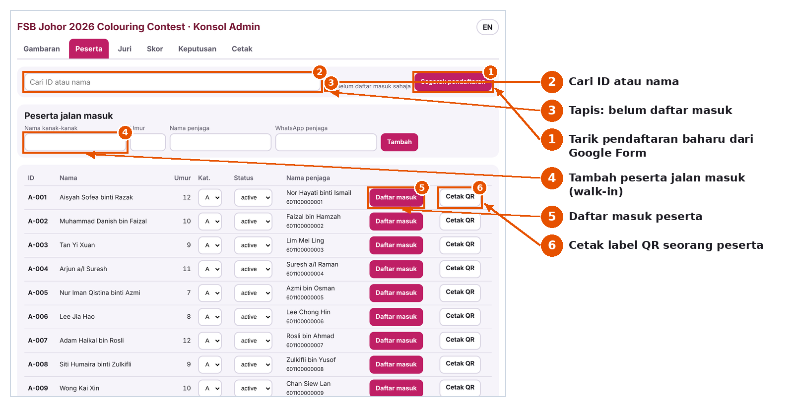
- Segerak pendaftaran menarik pendaftaran baharu dari Google Form dan memberi ID (A-001, B-001, dan seterusnya). Selamat ditekan berulang kali; tiada pendua.
- Cari ID atau nama.
- Tandakan Belum daftar masuk sahaja untuk melihat siapa yang belum tiba.
- Peserta jalan masuk: isi nama, umur, nama dan WhatsApp penjaga, kemudian Tambah. ID baharu diberi serta-merta.
- Daftar masuk apabila peserta tiba di kaunter.
- Cetak QR mencetak label untuk seorang peserta (sesuai untuk peserta jalan masuk).
B5. Mod kaunter pendaftaran
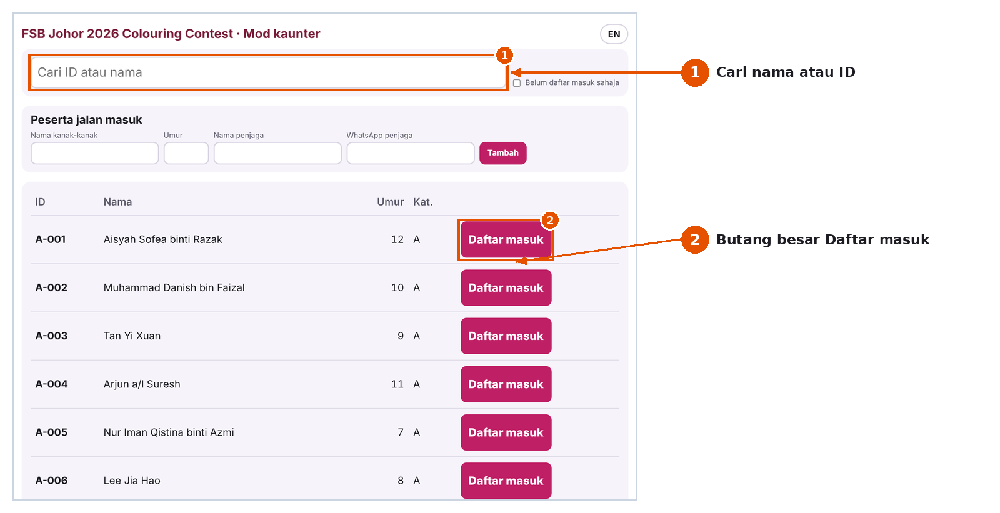
- Buka
/admin/?mode=deskpada tablet di meja pendaftaran. Cari nama atau ID. - Ketuk butang besar Daftar masuk. Mod ini hanya memaparkan daftar masuk dan tambah peserta, supaya petugas kaunter tidak tersentuh tetapan lain.
B6. Cetak label QR
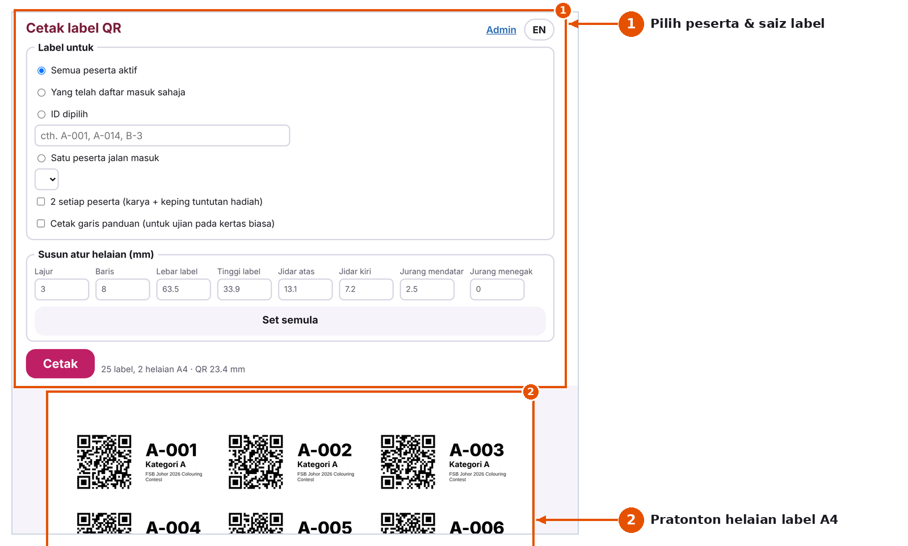
- Pilih label untuk: semua peserta aktif, yang sudah daftar masuk, ID dipilih, atau seorang peserta jalan masuk. Laraskan saiz label jika kertas label berbeza.
- Semak pratonton helaian A4, kemudian ketuk Cetak.
Cetak satu halaman atas kertas A4 biasa dahulu dengan tetapan Scale 100% dan Margins: None, ukur label dengan pembaris, dan cuba imbas sebelum mencetak atas kertas label. Tampal label di penjuru hadapan karya, di luar ruang mewarna.
B7. Skor
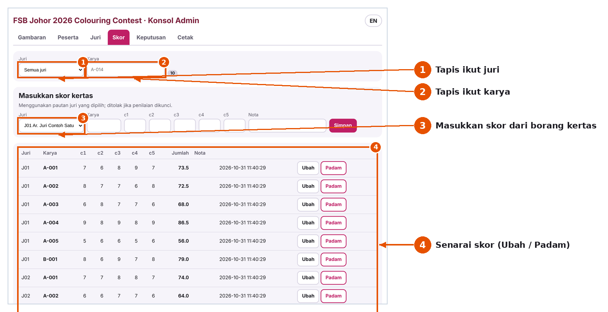
- Tapis senarai mengikut juri.
- Tapis mengikut karya.
- Masukkan skor kertas: jika telefon juri rosak, isi borang kertas sandaran ke sini (pilih juri, ID karya, markah c1 hingga c5).
- Senarai skor, dengan butang Ubah dan Padam pada setiap baris.
B8. Keputusan: kira, kunci, terbit
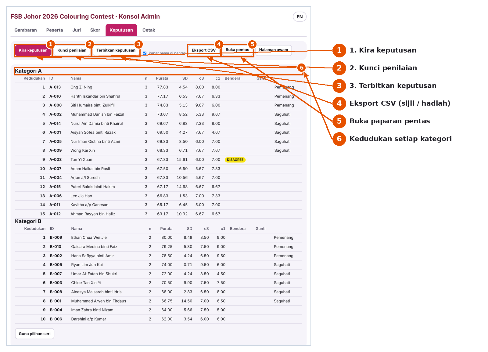
Ikut urutan ini selepas semua juri selesai:
- Kira keputusan. Markah akhir = purata jumlah markah semua juri bagi karya itu.
- Kunci penilaian. Juri tidak lagi boleh mengubah markah.
- Terbitkan keputusan apabila sedia diumumkan. Halaman awam
/results/akan memaparkan pemenang. - Eksport CSV untuk sijil dan meja hadiah.
- Buka pentas untuk paparan projektor (Bahagian C).
- Kedudukan setiap kategori. Lajur Bendera menandakan Pemenang dan Saguhati; "DISAGREE" bermaksud markah juri jauh berbeza dan wajar disemak. Jika ada seri, kotak pilihan seri muncul untuk ketua juri; isi dan ketuk Guna pilihan seri.
Peraturan seri: purata Kreativiti lebih tinggi menang; jika masih sama, purata Warna & Harmoni; jika masih sama, keputusan ketua juri.
Bahagian C: Hari acara (Ahad, 15 November 2026)
Sebelum hari acara
Pada hari acara
Paparan pentas
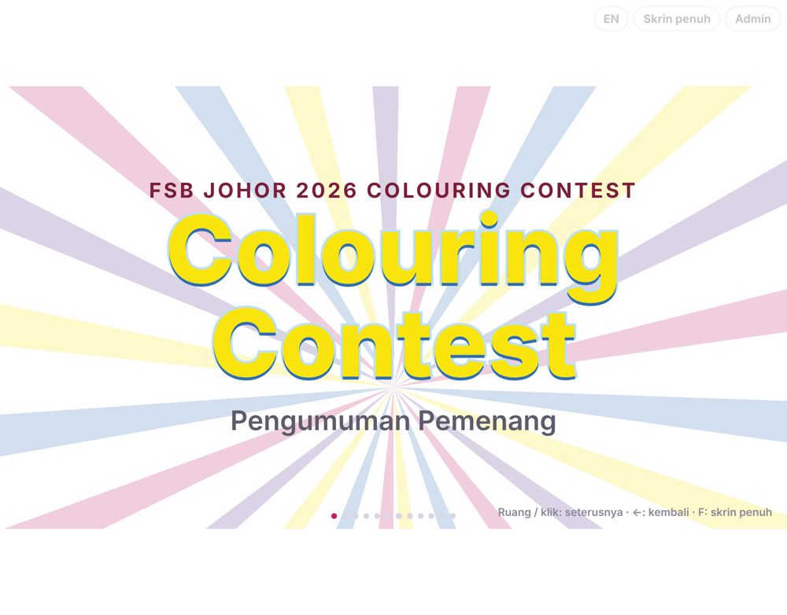
Dari tab Keputusan, ketuk Buka pentas pada komputer yang disambung ke projektor. Tekan F untuk skrin penuh.
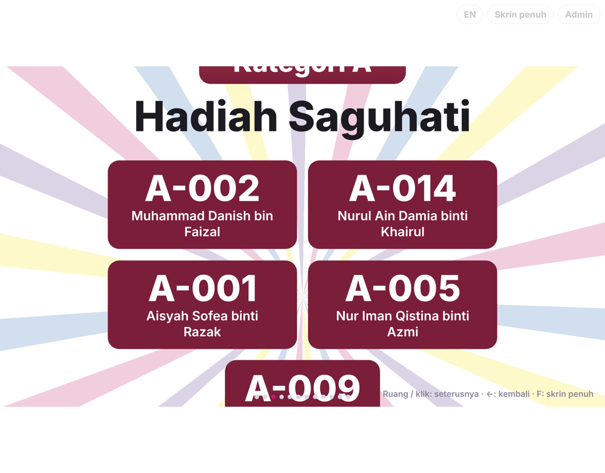
- Tekan Ruang atau klik untuk ke paparan seterusnya: saguhati dahulu, kemudian tempat ketiga, kedua dan pertama bagi setiap kategori.
- Tekan ← untuk kembali satu paparan.
- Nama peserta hanya dipaparkan jika pilihan Papar nama di pentas ditandakan dalam tab Keputusan.
Soalan lazim dan penyelesaian masalah
| Masalah | Penyelesaian |
|---|---|
| Kamera tidak terbuka | Benarkan akses kamera dalam tetapan pelayar. Jika masih gagal, gunakan Masukkan ID (A4). |
| Kod QR tidak dapat diimbas | Dekatkan atau jauhkan telefon (30 hingga 40 cm), elakkan silau lampu, atau gunakan Masukkan ID. |
| Pautan juri berkata tidak sah | Pautan mungkin sudah dijana semula atau juri dinyahaktif. Minta urusetia hantar pautan baharu (B3). |
| Butang Simpan kelabu | Masih ada kriteria yang belum diberi markah. Isi kelima-lima kriteria. |
| Lencana "menunggu" tidak hilang | Internet lemah. Teruskan menilai; markah dihantar sendiri apabila talian pulih. Jangan tutup pelayar. |
| Tersalah markah | Buka Sudah dinilai, ketuk ID itu, ubah dan simpan semula (A8). Tidak boleh selepas penilaian dikunci; hubungi urusetia. |
| Skrin berkata penilaian sudah dikunci | Urusetia sudah mengunci penilaian. Hubungi urusetia jika masih ada pembetulan. |
| Karya salah kategori | Urusetia tukar kategori dalam tab Peserta sebelum karya itu dinilai. |
| Butang Padam juri tidak berfungsi | Nyahaktif juri dahulu, kemudian Padam (B3). |
| Halaman admin minta kunci semula | Pelayar lain atau data pelayar dipadam. Masukkan kunci admin sekali lagi (B1). |
| Telefon juri rosak semasa acara | Juri isi borang kertas sandaran; urusetia masukkan dalam tab Skor (B7). |
Hubungi: penyelaras aplikasi, Assoc. Prof. Ts. Dr. Mohd Murtadha bin Mohamad (UTM).